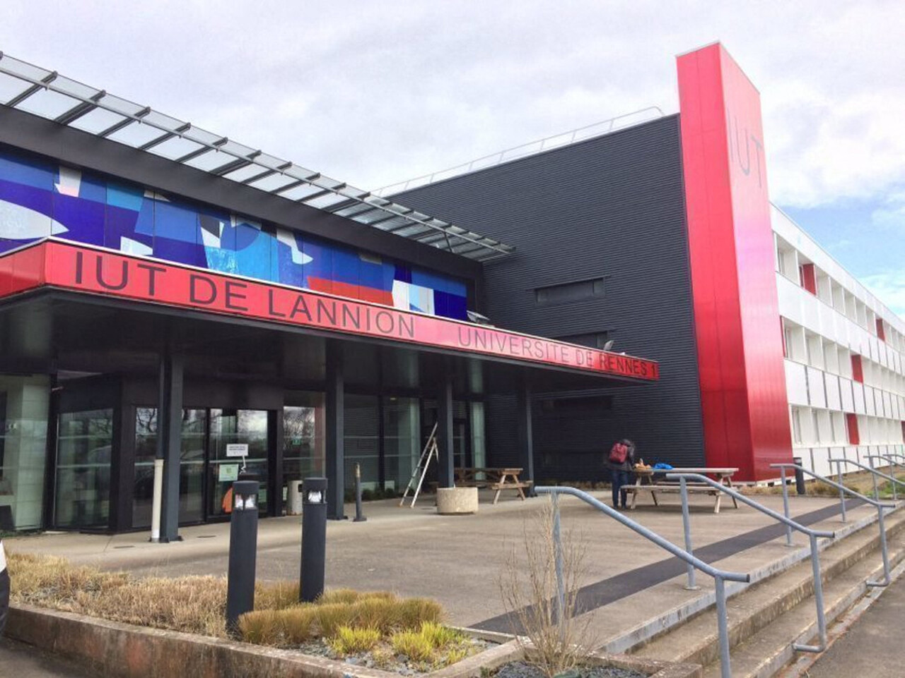
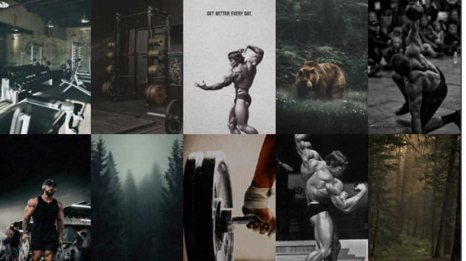
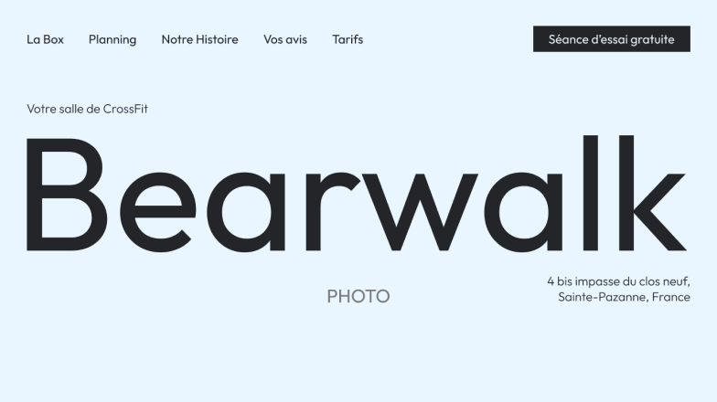
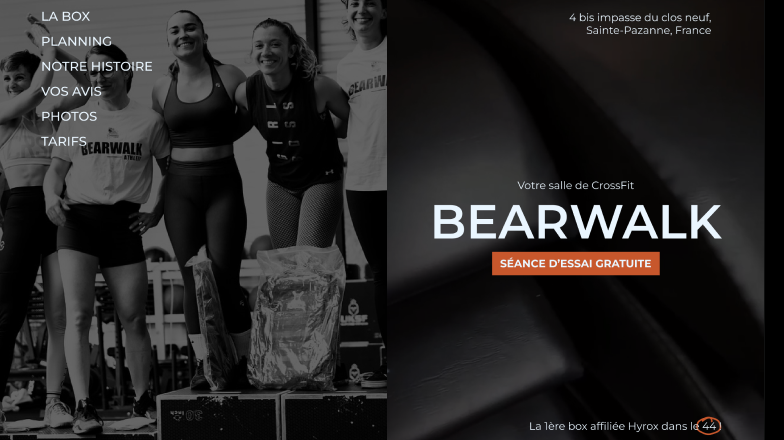
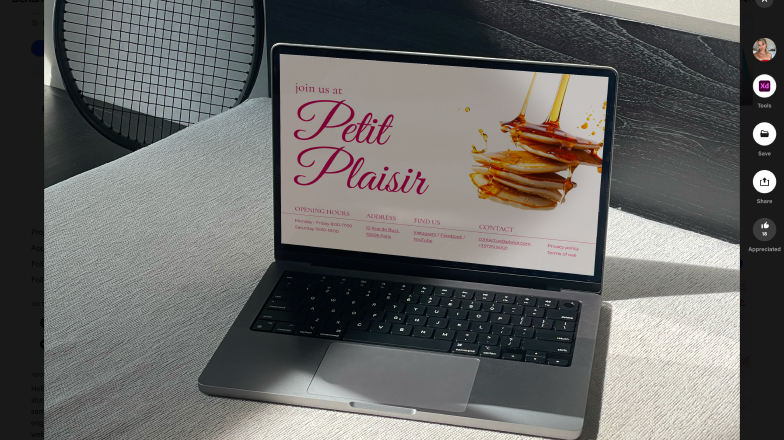
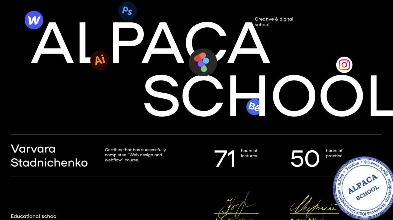
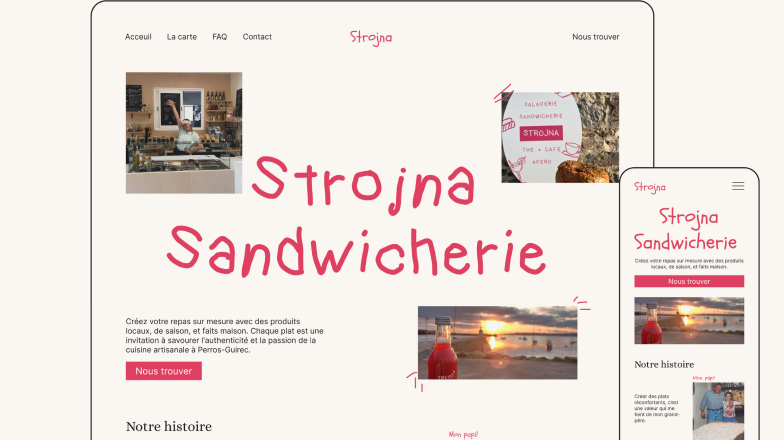
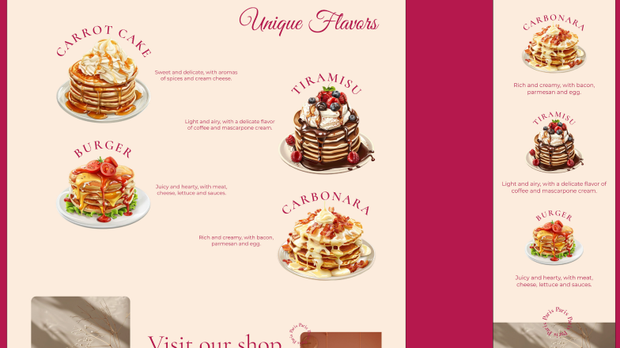
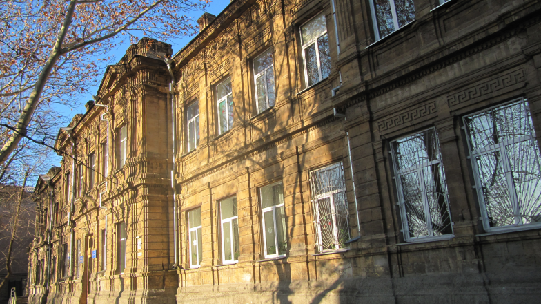
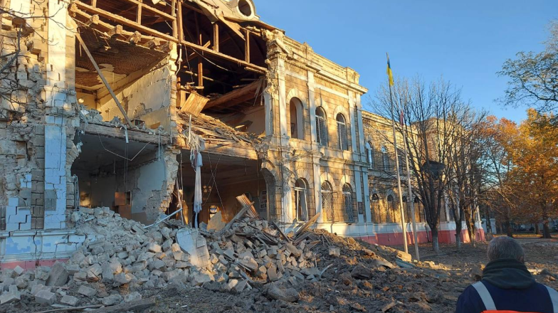

Ma formation

Mon futur diplôme BUT
Tout au long de mon parcours, j'ai acquis une maîtrise des technologies et des langages de programmation essentiels, tels que Java, JavaScript, HTML/CSS, ainsi que des frameworks populaires pour le développement mobile et web.
Je travaille régulièrement sur des projets concrets, ce qui me permet d'appliquer mes compétences dans des contextes réels et de collaborer au sein d'équipes multidisciplinaires.
[ 2024-2025 ]
Formation Spécialisée en Web Design, DesignForEveryone

Mon futur diplôme


Une formation axée sur l'amélioration des compétences en web design.
Réalisation d’un projet concret avec un client réel, englobant toutes les étapes : élaboration de la stratégie, création de la charte graphique, prototypage, design, développement et méthodologie de collaboration avec le client.
Technologies étudiées : Figma, outils IA pour le design, Webflow, Weblium, Shopify
[ 2024 ]
Formation Spécialisée en Design UI/UX, Alpaca School




Une formation intensive en web design, spécialisée dans la conception de sites web et l'expérience utilisateur (UI/UX).
Ce programme complet m'a permis d'acquérir des compétences pratiques et stratégiques pour créer des interfaces utilisateur efficaces et esthétiques, tout en optimisant l'expérience utilisateur.
La formation comprenait 71 heures de cours théoriques et 50 heures de pratique, où j'ai travaillé sur trois projets concrets, dont un pour un client réel.
[ 2015-2022 ]
Lycée n° 2 avec spécialisation en langues étrangères, Mykolayiv, Ukraine


Le programme intensif m'a permis d'acquérir des compétences avancées en anglais et français, à l'oral comme à l'écrit.
J'ai également suivi deux ans de formation militaire, renforçant ma discipline et mon sens du leadership et du travail en équipe.